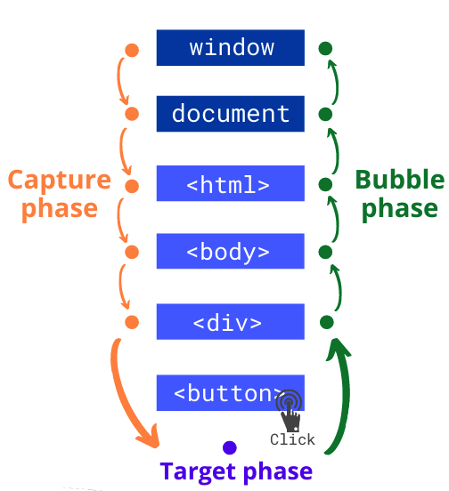

<<назад
Распространение событий
Распространение событий (event propagation) -
это термин описывающий жизненный цикл события,
который включает в себя три этапа: погружение,
таргетинг и всплытие. На практике чаще всего используют
только фазу всплытия.

При наступлении события, оно проходит через три обязательные фазы:
- Capturing phase (погружение) - событие начинается на window и тонет (проходит через все элементы-предки) до самого глубокого целевого элемента на котором произошло действие, например клик.
- Target phase (таргетинг) - событие дошло до целевого элемента. Этот этап включает только уведомление элемента о том, что на нём произошло действие.
- Bubbling phase (всплытие) - заключительная фаза, событие всплывает от самого глубокого, целевого элемента, через все элементы-предки до window.
ИНТЕРЕСНО!
Распространение часто неправильно используется как синоним стадии всплытия. Каждый раз, когда происходит событие, происходит его распространение.